|
Evan Shelhamer
I am an assistant professor at UBC
and
a member of the Vector Institute.
I also work as a senior research scientist at Google DeepMind.
I earned my PhD in computer science from UC Berkeley in 2019 where I was advised by Trevor Darrell as part of BAIR.
Before Berkeley, I earned dual degrees in computer science (artificial intelligence concentration) and psychology at UMass Amherst advised by Erik Learned-Miller.
After Berkeley, I spent a wonderful year in Cambridge, MA as a research scientist at Adobe and visiting scientist at MIT.
I believe in DIY science and open tooling for research and engineering.
I was the lead developer of the Caffe deep learning framework from version 0.1 to 1.0, and I still engage in open sourcery when I can.
shelhamer@imaginarynumber.net /
Google Scholar /
GitHub /
CV
|
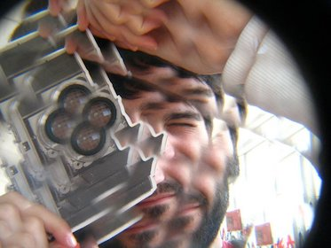
|
News
-
Join us at the 2nd workshop on test-time adaptation at ICML 2025 in Vancouver on Jul. 18!
-
I am lecturing on test-time adaptation at the DeepLearn 2025 summer school in Porto Jul. 21-25!
-
I gave talks at the Vector Institute, Carleton University, AI2, NTU, and UBC on robust vision and adaptation!
-
Join us at the 3rd workshop on machine learning for remote sensing at ICLR 2025 in Singapore Apr. 27!
-
I am serving as an area chair for ICLR, CVPR, ICML, ICCV, and NeurIPS and as an action editor for TMLR in 2025.
-
1x paper at NeurIPS'24: Adaptive Randomized Smoothing for sound test-time updates against attack.
-
Caffe has won the ACM MM 2024 test-of-time award!
-
I am serving as an area chair for ICLR, CVPR, ICML, ECCV, and NeurIPS and as an action editor for TMLR in 2024.
-
Join us at the 1st Workshop on Test-Time Adaptation at CVPR 2024 in Seattle on Jun. 18!
-
2x papers at CVPR'23: Seasoning Soups for Robustness + Diffusion-Driven Input Adaptation.
|
|
Research
I am interested in machine learning and computer vision, in particular adaptation and adaptive computation for robustness and efficiency during deployment along with the reconciliation of visual structure with deep learning (to learn more, not less).
In recent orbits I am working more and more on AI for science and sustainability through remote sensing and satellites.
See my scholar page for a full list of projects.
|
|
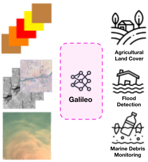
|
Galileo: Learning Global & Local Features of Many Remote Sensing Modalities
Gabriel Tseng*,
Anthony Fuller*,
Marlena Reil,
Henry Herzog,
Patrick Beukema,
Favyen Bastani,
James R. Green,
Evan Shelhamer,
Hannah Kerner†,
David Rolnick†
(* equal contribution, † equal advising)
ICML, 2025
arxiv /
code /
bib
Galileo is a single generalist model of remote sensing data for many kinds of inputs and tasks.
This data is diverse, with multiple modalities (optical, radar, ...), shapes (pixel time series, image time series, single images), and spatiotemporal scales (local, global).
Our unified self-supervised pre-training achieves transfer on 10 benchmarks with or without fine-tuning.
|
|
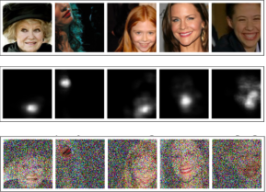
|
Adaptive Randomized Smoothing: Certified Adversarial Robustness for Multi-Step Defences
Saiyue Lyu*,
Shadab Shaikh*,
Frederick Shpilevskiy*,
Evan Shelhamer,
Mathias Lécuyer
(* equal contribution)
NeurIPS, 2024 (Spotlight)
arxiv /
poster + slides /
code /
bib
Adaptive Randomized Smoothing (ARS) certifies test-time updates against adversarial attack.
Our theory establishes the sound adaptive composition of general and high-dimensional functions of noisy inputs.
In practice, ARS learns to mask the noise for randomized smoothing given the input with results on CelebA, CIFAR-10, and ImageNet.
|
|
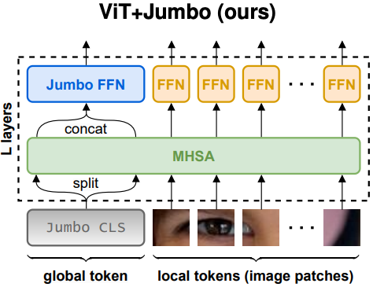
|
Simpler Fast Vision Transformers with a Jumbo CLS Token
Anthony Fuller,
Yousef Yassin,
Daniel G. Kyrollos,
Evan Shelhamer†,
James R. Green†
(† equal advising)
arXiv, 2025
arxiv /
code /
bib
Jumbo makes vision transformers (ViTs) faster and more accurate by altering just one token:
it makes a wider CLS token, splits it for self-attention, then joins it for its own wider FFN.
Jumbo improves on registers in accuracy and efficient architectures in speed, while still a plain ViT, with results on ImageNet-1K and 21K, time series, and self-supervision by MAE.
|
|
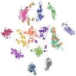
|
ReservoirTTA: Prolonged Test-time Adaptation for Evolving and Recurring Domains
Guillaume Vray*,
Devavrat Tomar*,
Xufeng Gao,
Jean-Philippe Thiran,
Evan Shelhamer†,
Behzad Bozorgtabar
arXiv, 2025
arxiv /
bib
Reservoir test-time adaptation populates and updates a fully test-time reservoir of domain-specialist models for robust long-horizon adaptation.
Our multi-modeling addresses issues with single model updates (catastrophic forgetting, inter-domain interference, and drift) on recurring and changing domains with state-of-the-art accuracy on ImageNet-C and more.
|
|
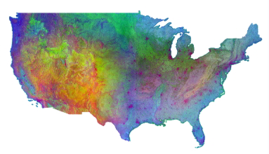
|
Learned Embedding Fields for Multi-Source/Multi-Temporal Earth Observation Imagery
Chris Brown*, Michal Kazmierski*, William Rucklidge, Valerie Pasquarella,
Sophia Alj, Emily Schechter, Sean Askay, Alexis Boukouvalas,
Evan Shelhamer
(* equal contribution)
ML4RS workshop poster at ICLR and demo at CVPR, 2024
poster
Embedding Fields are learned from remote sensing data then computed as an accessible substitute for remote sensing data.
In effect the model is delivered as data, indexed by space (lat, lon) and time (year), for use in analysis without the computational or technical obstacles of directly working with deep networks and remote sensing data products.
|
|
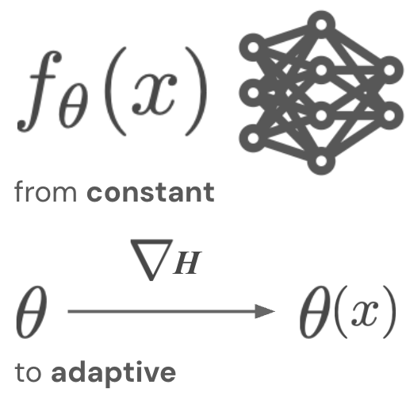
|
Tent: Fully Test-time Adaptation by Entropy Minimization
Dequan Wang*,
Evan Shelhamer*,
Shaoteng Liu,
Bruno Olshausen,
Trevor Darrell
ICLR, 2021 (Spotlight)
arxiv /
slides /
poster /
code /
bib
Tent ⛺️ helps a model adapt itself to changing conditions ☀️ 🌧 ❄️ by updating on new and different data during testing without altering training or requiring more supervision.
Tent adapts by test entropy minimization: optimizing the model for confidence as measured by the entropy of its predictions.
|
|
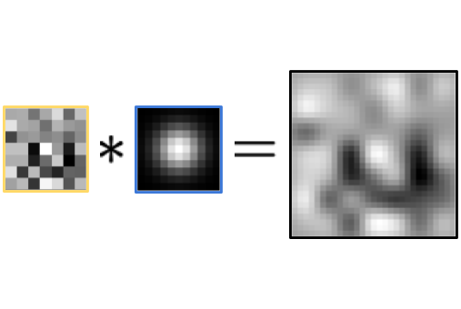
|
Blurring the Line between Structure and Learning to Optimize and Adapt Receptive Fields
Evan Shelhamer,
Dequan Wang,
Trevor Darrell
ICLRW, 2019
arxiv /
slides /
bib
We can optimize filter size by reconciling signal process and deep learning.
Composing structured Gaussian filters with free-form filters, and learning both, is a strictly more general parameterization.
In effect this controls the degree of locality:
changes in our parameters would require changes in architecture for standard networks.
Dynamic inference can even adapt filter size to cope with scale variation.
|
|
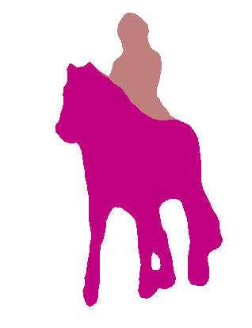
|
Fully Convolutional Networks for Semantic Segmentation
Evan Shelhamer*,
Jon Long*,
Trevor Darrell
(*equal contribution)
PAMI, 2017
CVPR, 2015 (Best Paper Honorable Mention)
PAMI arxiv /
CVPR arxiv /
code & models /
slides /
bib
Fully convolutional networks are machines for image-to-image learning and inference.
These local models alone, trained end-to-end and pixels-to-pixels, improved semantic segmentation accuracy 30% relative and efficiency 300x on PASCAL VOC.
Skip connections across layers help resolve what and where.
|
|
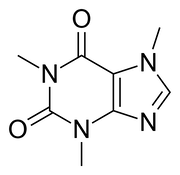
|
Caffe Deep Learning Framework
Y. Jia,
E. Shelhamer,
J. Donahue,
S. Karayev,
J. Long,
R. Girshick,
S. Guadarrama,
T. Darrell,
and our community contributors!
BVLC + BAIR, 2013–2017
ACM MM, 2014 (Winner of the Open Source Software Competition)
project /
code /
ACM MM'14 arxiv /
slides /
bib
Caffe is a deep learning framework made with expression, speed, and modularity in mind.
The deep learning shift was in part a sea change on the wave of open science and toolkits, including Caffe and its Model Zoo.
|
|
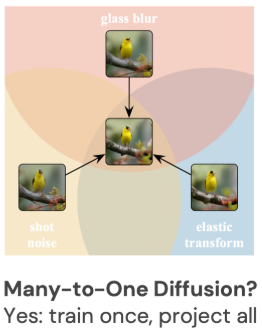
|
Back to the Source: Diffusion-Driven Adaptation to Test-Time Corruption
Jin Gao*,
Jialing Zhang*,
Xihui Liu,
Trevor Darrell,
Evan Shelhamer†,
Dequan Wang†
(* equal contribution, † equal advising)
CVPR, 2023
arxiv /
poster + slides /
code /
bib
Most methods for test-time adaptation update the source model by (re-)training on each target domain.
We update the target data instead, and project all test inputs toward the source domain with a generative diffusion model.
Our input updates help on small batches, data in dependent orders, or on data with multiple corruptions.
|
|
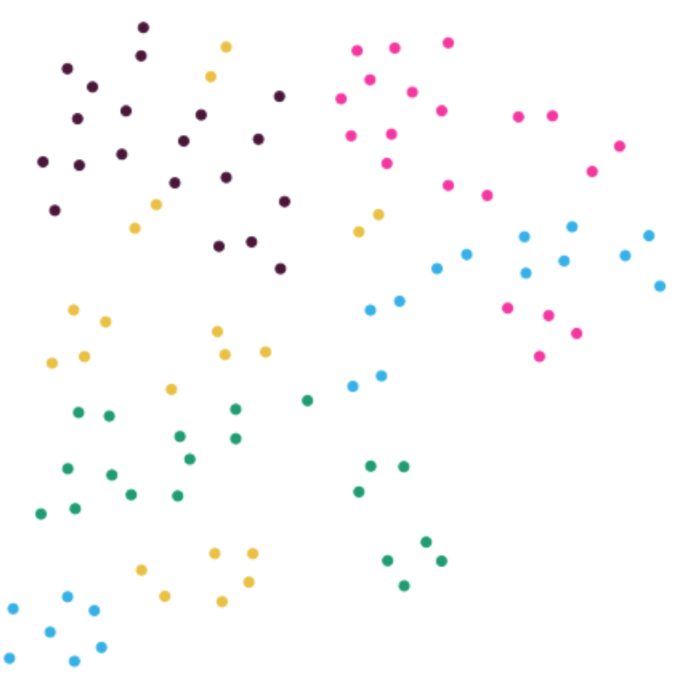
|
Infinite Mixture Prototypes for Few-Shot Learning
Kelsey R. Allen, Evan Shelhamer*, Hanul Shin*, Joshua B. Tenenbaum
ICML, 2019
arxiv /
bib
Infinite mixture prototypes adaptively adjust model capacity by representing classes as sets of clusters and inferring their number.
This handles both simple and complex few-shot tasks, and improves alphabet recognition accuracy by 25% absolute over uni-modal prototypes.
|
|
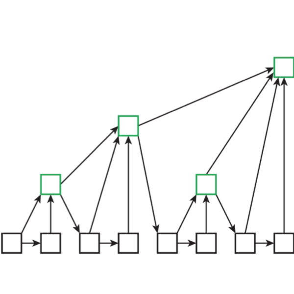
|
Deep Layer Aggregation
Fisher Yu,
Dequan Wang,
Evan Shelhamer,
Trevor Darrell
CVPR, 2018 (Oral)
arxiv /
code /
bib
Deepening aggregation, the iterative and hierarchical merging of features across layers, improves recognition and resolution.
|
|
Area Chair: CVPR (2021, 2023, 2024, 2025), NeurIPS (2023, 2024, 2025), ICLR (2024, 2025), ICML (2024, 2025), ICCV (2021, 2023, 2025), ECCV (2024).
Action Editor: TMLR (2023-)
Reviewer: CVPR, ICCV, ECCV, NeurIPS, ICML, ICLR, PAMI, JMLR, TMLR.
Workshop Organizer:
1st Workshop on Test-Time Adaptation at CVPR 2024 (lead),
3rd Workshop on Machine Learning for Remote Sensing at ICLR 2025,
2nd Workshop on Test-Time Adaptation at ICML 2025 (lead),
6th Workshop on Continual Learning in Computer Vision (CLVision) at ICCV 2025
Tutorial Organizer: DIY Deep Learning with
Caffe at CVPR 2015 and ECCV 2014.
|
|